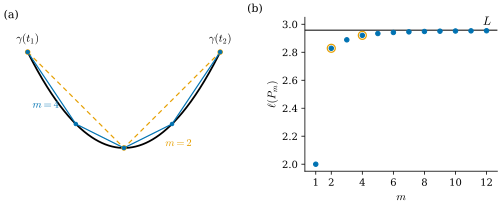
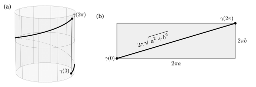

4.2 Regular Curves and Arc Length
Goals
- regular curve와 singular point를 정의하고 판별할 수 있으며, regular curve의 각 매개변수 값에서 접선을 정할 수 있다.
- regular curve가 국소적으로 좌표축 위의 smooth한 그래프임을 1변수 inverse function theorem으로 증명하고, regular curve에 cusp가 생기지 않는 이유를 설명할 수 있다.
- arc length와 곡선의 길이를 정의하고 원, helix, cusp 곡선의 길이를 계산할 수 있다.
- 곡선의 길이가 내접 polygonal path 길이의 극한임을 오차 상한과 함께 증명할 수 있다.
Prerequisites
- Definition 4.1.1 (parametrized curve), Definition 4.1.7 (velocity vector and speed)
- Non-example 4.1.9 (cusp), Example 4.1.10 (self-intersecting curve)
- Cauchy–Schwarz inequality \(\abs{\inner{v}{w}} \le \abs{v}\abs{w}\): Theorem 1.5.5
- bounded closed interval에서 연속인 함수는 최댓값을 갖는다: Theorem 3.6.10 (extreme value theorem). 1변수 미적분의 intermediate value theorem(Corollary 3.7.6), 평균값 정리, 미적분학의 기본정리.
Motivation
Section 4.1은 cusp 곡선 \(\gamma(t) = (t^2, t^3)\)으로 끝났다. smooth map인데도 trace가 원점에서 뾰족했고, 그 순간 속도가 \(0\)이었다. 움직이는 점이 멈추면 “곡선이 어느 방향으로 가는가”라는 물음에 답할 수 없다. 곡선의 기하를 공부하려면 각 순간에 방향이 정해져 있어야 하므로, 속도가 한 번도 \(0\)이 되지 않는 곡선만 다루기로 한다. 이것이 regular curve이다. 이 절의 전반부는 이 조건이 실제로 cusp를 막는다는 것을 증명한다.
후반부의 주제는 길이다. 자동차의 주행거리계는 매 순간의 속력을 누적한다. 곡선도 마찬가지로 속력 \(\abs{\gamma'(t)}\)을 적분해 길이를 정의한다. 그런데 이 정의가 우리가 아는 “길이”와 같은 것인가? 곡선 위에 점을 촘촘히 찍고 이웃한 점을 선분으로 이은 polygonal path의 길이를 재면, 점을 늘릴수록 적분값에 다가가는가(Figure 4.2.1)? Theorem 4.2.11이 그렇다고 답한다.

Regular Curves
Definition 4.2.1 (regular curve). parametrized curve \(\gamma\colon I \to \R^3\)이 모든 \(t \in I\)에서 \(\gamma'(t) \neq 0\)이면 regular curve(정칙곡선)이라 한다. \(\gamma'(t) = 0\)인 \(t\)를 \(\gamma\)의 singular point(특이점)이라 한다.
singular point는 trace의 점이 아니라 매개변수의 값이라는 데 주의하자. regularity는 map \(\gamma\)의 성질이다(Non-example 4.2.3(b)).
Example 4.2.2. 다음 곡선은 모두 regular이다.
- (a) 직선 \(\gamma(t) = p + tv\) (\(v \neq 0\)): \(\gamma'(t) = v \neq 0\).
- (b) 원 \((r\cos t, r\sin t, 0)\)과 helix \((a\cos t, a\sin t, bt)\): 속력이 각각 \(r \gt 0\), \(\sqrt{a^2 + b^2} \gt 0\)이다(Example 4.1.8).
- (c) 그래프 \(\gamma(t) = (t, f(t))\): 첫째 성분의 도함수가 \(1\)이다.
- (d) Example 4.1.10의 \(\gamma(t) = (t^2 - 1, t^3 - t)\): 속도가 \(0\)이 되지 않음을 거기서 보였다. 이 곡선은 regular이지만 injective가 아니다. regularity는 “스스로 만나지 않는다”는 뜻이 아니다.
Non-example 4.2.3. (a) cusp 곡선 \((t^2, t^3)\)은 \(t = 0\)이 singular point이므로 regular가 아니다(Non-example 4.1.9).
(b) \(\gamma(t) = (t^3, t^3)\) (\(t \in \R\))의 trace는 직선 \(y = x\) 전체다. trace는 더할 나위 없이 매끄럽지만 \(\gamma'(t) = (3t^2, 3t^2)\)이므로 \(t = 0\)이 singular point이다. 점이 원점에서 잠깐 멈췄다가 같은 방향으로 계속 간다. 같은 직선을 \(t \mapsto (t, t)\)로 그리면 regular이다. regularity는 trace가 아니라 map에 달려 있다.
(c) 상수 곡선 \(\gamma(t) = p\)는 모든 \(t\)가 singular point이다. trace는 점 하나다.
regular curve의 각 순간에는 방향이 정해져 있으므로 접선을 정의할 수 있다.
Definition 4.2.4 (tangent line). \(\gamma\colon I \to \R^3\)이 regular curve이고 \(t \in I\)일 때, 직선
를 \(t\)에서 \(\gamma\)의 접선(tangent line)이라 한다.
(4.1.4)에서 보았듯이 \(\gamma(t)\)와 \(\gamma(t + h)\)를 잇는 secant line의 방향은 \((\gamma(t + h) - \gamma(t))/h\)이고, 이것은 \(h \to 0\)일 때 영이 아닌 벡터 \(\gamma'(t)\)로 간다. 그래서 접선은 secant line의 극한이다. Example 4.1.10의 곡선은 원점에서 \(t = 1\)의 접선 \(y = x\)와 \(t = -1\)의 접선 \(y = -x\), 두 개를 갖는다. 접선도 속도처럼 매개변수의 값에 붙는다.
이제 regularity가 cusp를 막는다는 것을 보이자. 도구는 1변수 inverse function theorem이다. 같은 결론을 Example 2.3.11에서 inverse function theorem(Theorem 2.3.5)로 얻었다. 이 장에서는 두 번(여기와 Theorem 4.3.9) 쓰므로, \(n\)변수 정리 없이 1변수 방법만으로 다시 증명해 둔다.
Lemma 4.2.5 (one-variable inverse function theorem). \(I\)가 열린구간이고 \(f\colon I \to \R\)가 매끄러우며 모든 \(t \in I\)에서 \(f'(t) \neq 0\)이라 하자.
- (a) \(f'\)의 부호는 \(I\) 전체에서 일정하고, \(f\)는 순증가이거나 순감소다.
- (b) \(f(I)\)는 열린구간이다.
- (c) 역함수 \(f^{-1}\colon f(I) \to I\)는 매끄럽고 \((f^{-1})'(y) = 1/f'(f^{-1}(y))\)이다.
Proof idea: 도함수가 부호를 바꾸려면 \(0\)을 지나야 한다(intermediate value theorem). 순단조이면 역함수가 있고, 역함수의 미분 공식 \((f^{-1})' = 1/(f' \circ f^{-1})\)을 되풀이해 쓰면 매끄러움이 한 단계씩 올라간다.
Proof. (a) \(f'(t_1) \lt 0 \lt f'(t_2)\)인 \(t_1, t_2\)가 있다면, 연속함수 \(f'\)에 intermediate value theorem(Corollary 3.7.6)을 쓰면 둘 사이에 \(f' = 0\)인 점이 생겨 가정에 어긋난다. 따라서 \(f'\)의 부호는 일정하다. \(f' \gt 0\)이라 하자(\(f' \lt 0\)이면 \(-f\)를 생각한다). \(t_1 \lt t_2\)이면 평균값 정리에 의해 어떤 \(\xi \in (t_1, t_2)\)가 있어 \(f(t_2) - f(t_1) = f'(\xi)(t_2 - t_1) \gt 0\)이다. 즉 \(f\)는 순증가다.
(b) \(y_1 = f(t_1) \lt y \lt y_2 = f(t_2)\)이면 intermediate value theorem에 의해 \(y\)도 \(f\)의 값이므로 \(f(I)\)는 구간이다. 또 \(y = f(t) \in f(I)\)이면 \(I\)가 열린구간이므로 \(t\)보다 큰 \(t' \in I\)와 작은 \(t'' \in I\)가 있고, \(f(t'') \lt y \lt f(t')\)이다. 즉 \(f(I)\)에는 최댓값도 최솟값도 없으므로 열린구간이다.
(c) \(f\)가 순증가이므로 \(g = f^{-1}\colon f(I) \to I\)가 있다. 먼저 \(g\)가 연속임을 보이자. \(y_0 = f(t_0)\)이고 \(\varepsilon \gt 0\)이 \([t_0 - \varepsilon, t_0 + \varepsilon] \subseteq I\)를 만족한다고 하자. \(\delta = \min\{f(t_0 + \varepsilon) - y_0,\ y_0 - f(t_0 - \varepsilon)\} \gt 0\)으로 두면, \(\abs{y - y_0} \lt \delta\)일 때 \(f(t_0 - \varepsilon) \lt y \lt f(t_0 + \varepsilon)\)이고, \(f\)가 순증가이므로 \(t_0 - \varepsilon \lt g(y) \lt t_0 + \varepsilon\)이다.
다음으로 미분가능성이다. \(y \neq y_0\)이면 \(t = g(y) \neq t_0\)이고
\[ \frac{g(y) - g(y_0)}{y - y_0} = \frac{t - t_0}{f(t) - f(t_0)}. \]\(y \to y_0\)이면 연속성에 의해 \(t \to t_0\)이고, 우변은 \(1/f'(t_0)\)로 간다. 따라서 \(g'(y_0) = 1/f'(g(y_0))\)이다. 마지막으로 매끄러움이다. \(g\)가 \(C^k\)라 하자(\(k = 0\)에서는 방금 보인 연속성). 그러면 \(f' \circ g\)는 \(C^k\) 함수의 합성이므로 \(C^k\)이고 \(0\)이 되지 않으므로 \(g' = 1/(f' \circ g)\)도 \(C^k\)이다. 즉 \(g\)는 \(C^{k+1}\)이다. 귀납법에 의해 \(g\)는 매끄럽다.
Proposition 4.2.6 (a regular curve is locally a graph). \(\gamma = (x, y, z)\colon I \to \R^3\)이 regular curve이고 \(t_0 \in I\)라 하자. \(x'(t_0) \neq 0\)이면, \(t_0\)을 포함하는 열린구간 \(I_0 \subseteq I\)가 있어서 \(x(I_0)\)는 열린구간이고 smooth function \(g, h\colon x(I_0) \to \R\)에 대하여
이다. 또 \(\gamma|_{I_0}\)은 injective다. \(y'(t_0) \neq 0\)이나 \(z'(t_0) \neq 0\)일 때도 좌표의 역할을 바꾸어 같은 결론이 성립한다. \(\gamma'(t_0) \neq 0\)이므로 세 경우 가운데 적어도 하나는 일어난다.
이 명제가 말하는 것. regular curve를 한 순간 근처에서 확대해 보면 어느 좌표축 위의 smooth한 그래프다. 그래프에는 cusp도, 꺾인 점도, 스스로 만나는 점도 없다. 다만 이것은 국소적 성질이다. Example 4.1.10의 곡선은 \(t = 1\) 근처와 \(t = -1\) 근처에서 각각 그래프이지만, 두 조각이 원점에서 만난다.
Proof idea: \(x'\)이 \(t_0\) 근처에서 \(0\)이 아니므로 \(x\)를 매개변수로 쓸 수 있다. 즉 \(t\)를 \(x\)의 함수로 풀어 \(y\)와 \(z\)에 넣는다.
Proof. \(x'\)은 연속이고 \(x'(t_0) \neq 0\)이므로 \(t_0\)을 포함하는 열린구간 \(I_0 \subseteq I\)가 있어 \(I_0\)에서 \(x' \neq 0\)이다. Lemma 4.2.5를 \(x|_{I_0}\)에 쓰면 \(x(I_0)\)는 열린구간이고, \(x|_{I_0}\)은 \(x(I_0)\) 위로의 bijective이며, 그 역함수 \(k = (x|_{I_0})^{-1}\)은 매끄럽다. \(g = y \circ k\), \(h = z \circ k\)로 두면 매끄럽다. \(t \in I_0\)이고 \(u = x(t)\)이면 \(t = k(u)\)이므로 \(\gamma(t) = (u,\ y(k(u)),\ z(k(u))) = (u, g(u), h(u))\)이다. \(t\)가 \(I_0\)를 다 돌 때 \(u\)는 \(x(I_0)\)를 다 돌므로 (4.2.2)가 성립한다. \(\gamma(t_1) = \gamma(t_2)\)이면 첫 성분에서 \(x(t_1) = x(t_2)\)이고, \(x|_{I_0}\)이 injective이므로 \(t_1 = t_2\)이다.
cusp 곡선 \((t^2, t^3)\)과 비교해 보자. \(t = 0\)에서 \(x' = y' = 0\)이라 명제를 쓸 수 없다. 실제로 원점 근처의 trace는 \(x\)축 위의 그래프가 아니다 (\(x\) 하나에 \(y = \pm x^{3/2}\) 두 값). \(y = t^3\)에서 \(t = y^{1/3}\)이므로 trace는 \(y\)축 위의 그래프 \(x = y^{2/3}\)이긴 하지만, 함수 \(y \mapsto y^{2/3}\)은 \(y = 0\)에서 미분가능하지 않다. 이 trace는 어떤 regular curve로도 원점을 지나며 그릴 수 없다(Exercise 4.2.8).
Arc Length
Definition 4.2.7 (arc length and length of a curve). \(\gamma\colon I \to \R^3\)이 parametrized curve이고 \(t_0 \in I\)라 하자. 함수
를 \(t_0\)에서 잰 \(\gamma\)의 arc length(호의 길이)라 한다(\(t \lt t_0\)이면 음수다). 닫힌구간 \([t_1, t_2] \subseteq I\)에 대하여
를 \([t_1, t_2]\)에서 \(\gamma\)의 곡선의 길이(length of a curve)라 한다. \(I\) 전체에서의 (이상)적분 \(\int_I \abs{\gamma'(t)}\,dt\)는 \(L(\gamma)\)로 쓴다. 이 값은 \(\infty\)일 수도 있다.
\(\abs{\gamma'}\)은 연속함수의 합성이므로 연속이고, 따라서 적분이 존재한다. regularity는 필요하지 않다. 미적분학의 기본정리에서
이다. 곧 arc length의 변화율은 속력이다. 적분변수를 \(\tau\)로 쓴 것은 윗끝 \(t\)와 구별하기 위해서다. 이 기호는 Chapter 5의 torsion과 관계가 없다.
Example 4.2.8 (length of the circle, the helix, and the cuspidal curve). (a) 원 \(\gamma(t) = (r\cos t, r\sin t, 0)\)의 속력은 \(r\)이므로(4.1.5) \(0\)에서 잰 arc length는 \(s(t) = rt\)이고, \(L(\gamma|_{[0, 2\pi]}) = 2\pi r\)이다. \(L(\gamma|_{[0, 4\pi]}) = 4\pi r\)이다. trace는 둘 다 같은 원이지만 두 번째 곡선은 원을 두 번 돈다. 길이는 trace가 아니라 곡선에 속한 값이다.
(b) helix \(\gamma(t) = (a\cos t, a\sin t, bt)\)의 속력은 \(\sqrt{a^2 + b^2}\)이므로(4.1.6)
이다. 이 값은 그림으로도 이해할 수 있다. cylinder를 세로선 하나를 따라 잘라 평면에 펼치면, cylinder의 점 \((a\cos t, a\sin t, z)\)는 평면의 점 \((at, z)\)로 가고 helix 한 바퀴는 선분 \(\{(at, bt) : 0 \le t \le 2\pi\}\)가 된다. 이 선분은 두 변이 \(2\pi a\), \(2\pi b\)인 직각삼각형의 빗변이므로 길이가 \(\sqrt{(2\pi a)^2 + (2\pi b)^2} = 2\pi\sqrt{a^2 + b^2}\)이다(Figure 4.2.2). 펼치기가 cylinder 위 곡선의 길이를 바꾸지 않는다는 사실은 Chapter 7에서 증명한다.
(c) cusp 곡선 \(\gamma(t) = (t^2, t^3)\)은 regular가 아니지만 길이는 잴 수 있다. \(\abs{\gamma'(t)} = \sqrt{4t^2 + 9t^4} = \abs{t}\sqrt{4 + 9t^2}\)이다. \(w = 4 + 9t^2\)으로 변수를 바꾸면 \(dw = 18t\,dt\)이므로
이다. 피적분함수가 짝함수이므로 \(L(\gamma|_{[-1, 1]}) = 2(13\sqrt{13} - 8)/27 \approx 2.879\)이다.
Verification: verify/v-4-2-arc-length.py

이제 이 정의가 “자로 잰 길이”와 같음을 보이자. 먼저 vector-valued function의 적분에 대한 triangle inequality가 필요하다. vector-valued function의 적분은 성분별로 정한다. \(\alpha = (\alpha^1, \alpha^2, \alpha^3)\)이면 \(\int \alpha = (\int \alpha^1, \int \alpha^2, \int \alpha^3)\)이다. 성분별로 미적분학의 기본정리를 쓰면 parametrized curve에 대하여 \(\gamma(t_2) - \gamma(t_1) = \int_{t_1}^{t_2} \gamma'(t)\,dt\)이다.
Lemma 4.2.9 (triangle inequality for integrals). \(\alpha\colon [t_1, t_2] \to \R^3\)이 연속이면 \(\displaystyle \Big\lvert \int_{t_1}^{t_2} \alpha(t)\,dt \Big\rvert \le \int_{t_1}^{t_2} \abs{\alpha(t)}\,dt\)이다.
Proof idea: 적분값 \(w\) 방향의 성분만 본다. \(w\) 방향 성분의 적분은 \(\abs{w}\)이고, 각 순간의 \(w\) 방향 성분은 \(\abs{\alpha(t)}\)를 넘지 못한다.
Proof. \(w = \int_{t_1}^{t_2} \alpha(t)\,dt\)로 두자. \(w = 0\)이면 할 것이 없다. \(w \neq 0\)이면 적분의 linearity와 Cauchy–Schwarz inequality(Theorem 1.5.5)에서
\[ \abs{w}^2 = \sum_{i=1}^3 w^i \int_{t_1}^{t_2} \alpha^i(t)\,dt = \int_{t_1}^{t_2} \inner{w}{\alpha(t)}\,dt \le \int_{t_1}^{t_2} \abs{w}\,\abs{\alpha(t)}\,dt = \abs{w}\int_{t_1}^{t_2} \abs{\alpha(t)}\,dt \]이다. 양변을 \(\abs{w} \gt 0\)으로 나누면 된다.
Corollary 4.2.10 (the line segment is the shortest). parametrized curve \(\gamma\)와 \([t_1, t_2] \subseteq I\)에 대하여 \(\abs{\gamma(t_2) - \gamma(t_1)} \le L(\gamma|_{[t_1, t_2]})\)이다. 즉 두 점을 잇는 어떤 곡선도 두 점을 잇는 선분보다 짧지 않다.
Proof. \(\gamma(t_2) - \gamma(t_1) = \int_{t_1}^{t_2} \gamma'(t)\,dt\)에 Lemma 4.2.9를 쓰면 \(\abs{\gamma(t_2) - \gamma(t_1)} \le \int_{t_1}^{t_2} \abs{\gamma'(t)}\,dt = L(\gamma|_{[t_1, t_2]})\)이다.
등호가 언제 성립하는지는 Exercise 4.2.6에서 다룬다. 이제 내접 polygonal path를 정확히 정의하자. \([t_1, t_2]\)의 분할 \(P\)는 유한개의 점 \(t_1 = u_0 \lt u_1 \lt \cdots \lt u_m = t_2\)이고, \(\abs{P} = \max_i (u_i - u_{i-1})\)을 그 눈금이라 한다. 점 \(\gamma(u_0), \dots, \gamma(u_m)\)을 차례로 이은 polygonal path의 길이는
이다.
Theorem 4.2.11 (length as the limit of inscribed polygonal paths). \(\gamma\colon I \to \R^3\)이 parametrized curve이고 \([t_1, t_2] \subseteq I\), \(L = L(\gamma|_{[t_1, t_2]})\), \(M = \max_{[t_1, t_2]} \abs{\gamma''}\)이라 하자. \([t_1, t_2]\)의 모든 분할 \(P\)에 대하여
이다. 따라서 \(\abs{P} \to 0\)이면 \(\ell(P) \to L\)이고, \(L\)은 모든 내접 polygonal path 길이의 상한 \(\sup_P \ell(P)\)이다.
이 정리가 말하는 것. 적분으로 정의한 길이는 곡선에 점을 찍고 곧은 자로 잰 길이의 극한과 같다. 게다가 오차가 눈금에 비례해 줄어든다는 정량적 정보까지 준다. \(M\)은 extreme value theorem(Theorem 3.6.10)에 의해 존재한다(\(\abs{\gamma''}\)은 닫힌구간에서 연속).
Proof idea: 짧은 조각 \([u_{i-1}, u_i]\) 위에서 속도 \(\gamma'\)은 거의 상수 \(\gamma'(u_i)\)이고, 그 차이는 가속도의 크기 \(M\)으로 조절된다. 속도가 상수라면 곡선 조각의 길이와 현의 길이가 똑같다.
Proof. \(\Delta_i = u_i - u_{i-1}\)로 쓰자. 왼쪽 부등식: 각 조각에 Corollary 4.2.10을 쓰면 \(\abs{\gamma(u_i) - \gamma(u_{i-1})} \le \int_{u_{i-1}}^{u_i} \abs{\gamma'}\)이고, \(i\)에 대해 더하면 \(\ell(P) \le L\)이다.
오른쪽 부등식: \(u \in [u_{i-1}, u_i]\)이면 Lemma 4.2.9에 의해
\[ \abs{\gamma'(u) - \gamma'(u_i)} = \Big\lvert \int_u^{u_i} \gamma''(v)\,dv \Big\rvert \le \int_u^{u_i} \abs{\gamma''(v)}\,dv \le M\,\Delta_i \]이다(Proposition 2.2.8의 mean value inequality를 \(\gamma'\)에 쓴 것과 같다). 이것을 두 번 쓴다. 첫째, triangle inequality \(\abs{\gamma'(u)} \le \abs{\gamma'(u_i)} + \abs{\gamma'(u) - \gamma'(u_i)}\)를 적분하면
\[ \int_{u_{i-1}}^{u_i} \abs{\gamma'(u)}\,du \le \abs{\gamma'(u_i)}\,\Delta_i + M\Delta_i^2 \]이다. 둘째, \(\gamma(u_i) - \gamma(u_{i-1}) = \int_{u_{i-1}}^{u_i} \gamma'(u)\,du = \gamma'(u_i)\,\Delta_i + \int_{u_{i-1}}^{u_i} \big(\gamma'(u) - \gamma'(u_i)\big)\,du\)이므로, \(\abs{a + b} \ge \abs{a} - \abs{b}\)와 Lemma 4.2.9에서
\[ \abs{\gamma(u_i) - \gamma(u_{i-1})} \ge \abs{\gamma'(u_i)}\,\Delta_i - M\Delta_i^2 \]이다. 두 식을 빼면 \(\int_{u_{i-1}}^{u_i} \abs{\gamma'} - \abs{\gamma(u_i) - \gamma(u_{i-1})} \le 2M\Delta_i^2\)이다. \(i\)에 대해 더하고 \(\Delta_i \le \abs{P}\)를 쓰면
\[ L - \ell(P) \le 2M\sum_{i=1}^m \Delta_i^2 \le 2M\,\abs{P}\sum_{i=1}^m \Delta_i = 2M\,\abs{P}\,(t_2 - t_1) \]이다. 마지막 주장: 모든 \(P\)에서 \(\ell(P) \le L\)이고, 등분할 \(P_m\)에서는 \(\abs{P_m} = (t_2 - t_1)/m \to 0\)이므로 \(\ell(P_m) \to L\)이다. 따라서 \(\sup_P \ell(P) = L\)이다.
Figure 4.2.1의 포물선에서는 \(\gamma''(t) = (0, 2)\)이므로 \(M = 2\), \(t_2 - t_1 = 2\)이고 상한은 \(2 \cdot 2 \cdot 2 \cdot (2/m) = 16/m\)이다. 실제 오차는 이보다 훨씬 작아서 \(m = 12\)일 때 약 \(0.004\)이다. 상한 (4.2.9)는 수렴을 보장하는 데 쓰는 것이지 오차를 정확히 재는 것이 아니다 (Exercise 4.2.7에서 원으로 확인한다).
Summary
- regular curve는 속도가 한 번도 \(0\)이 되지 않는 곡선이다. regularity는 trace가 아니라 map의 성질이다(\((t^3, t^3)\)은 smooth한 직선을 그리지만 regular가 아니다).
- regular curve는 각 매개변수 값에서 접선을 갖고, 국소적으로 좌표축 위의 smooth한 그래프다(Proposition 4.2.6). 그래서 cusp가 생기지 않는다.
- arc length \(s(t) = \int_{t_0}^t \abs{\gamma'(\tau)}\,d\tau\)는 \(s' = \abs{\gamma'}\)을 만족한다. 원의 한 바퀴는 \(2\pi r\), helix의 한 바퀴는 \(2\pi\sqrt{a^2 + b^2}\)이다.
- 곡선의 길이는 내접 polygonal path 길이의 상한이자 극한이고, 오차는 \(2M(t_2 - t_1)\abs{P}\) 이하다(Theorem 4.2.11). 특히 선분이 가장 짧다.
다음 절에서는 같은 trace를 다른 빠르기로 그리는 곡선들을 reparametrization이라는 개념으로 묶고, 곡선의 길이가 reparametrization에 무관함을 보인다. 또 모든 regular curve를 arc length 자체를 매개변수로 삼아 다시 쓸 수 있음을 증명한다.
Exercises
Exercise 4.2.1 ★ astroid \(\gamma(t) = (\cos^3 t, \sin^3 t)\) (\(t \in \R\))의 singular point를 모두 구하고, \([0, 2\pi]\)에서의 길이를 구하여라.
Solution
\(\gamma'(t) = (-3\cos^2 t\sin t,\ 3\sin^2 t\cos t) = 3\sin t\cos t\,(-\cos t, \sin t)\)이고 \(\abs{(-\cos t, \sin t)} = 1\)이므로 \(\abs{\gamma'(t)} = 3\abs{\sin t\cos t}\)이다. singular point는 \(\sin t\cos t = 0\), 즉 \(t = k\pi/2\) (\(k \in \Z\))이다. 이 순간 곡선은 네 점 \((\pm1, 0)\), \((0, \pm1)\)을 지나며, trace는 그 네 점에서 뾰족하다.
\(\abs{\sin t\cos t} = \tfrac12\abs{\sin 2t}\)는 주기가 \(\pi/2\)이므로
\[ L(\gamma|_{[0, 2\pi]}) = 4\int_0^{\pi/2} 3\sin t\cos t\,dt = 4 \cdot 3 \cdot \Big[\tfrac12\sin^2 t\Big]_0^{\pi/2} = 6 \]이다.
Verification: verify/v-4-2-arc-length.py
Exercise 4.2.2 ★ catenary \(\gamma(t) = (t, \cosh t)\)가 regular임을 보이고, \(c \gt 0\)일 때 \([-c, c]\)에서의 길이가 \(2\sinh c\)임을 보여라.
Solution
\(\gamma'(t) = (1, \sinh t) \neq 0\)이므로 regular이다. \(\cosh^2 t - \sinh^2 t = 1\)과 \(\cosh t \gt 0\)에서 \(\abs{\gamma'(t)} = \sqrt{1 + \sinh^2 t} = \cosh t\)이다. 따라서 길이는 \(\int_{-c}^{c}\cosh t\,dt = \sinh c - \sinh(-c) = 2\sinh c\)이다.
Verification: verify/v-4-2-arc-length.py
Exercise 4.2.3 ★ \(\gamma(t) = (2t,\ t^2,\ t^3/3)\)의 속력이 \(t^2 + 2\)임을 보이고, \([0, 3]\)에서의 길이를 구하여라.
Solution
\(\gamma'(t) = (2, 2t, t^2)\)이므로 \(\abs{\gamma'(t)}^2 = 4 + 4t^2 + t^4 = (t^2 + 2)^2\)이고 \(\abs{\gamma'(t)} = t^2 + 2\)이다. 길이는 \(\int_0^3 (t^2 + 2)\,dt = 9 + 6 = 15\)이다.
Verification: verify/v-4-2-arc-length.py
Exercise 4.2.4 ★ 참인지 거짓인지 판별하고 이유를 대어라. (a) regular curve는 injective다. (b) regular curve \(\gamma\)와 \(t_0 \in I\)에 대하여, \(t_0\)을 포함하는 열린구간 \(I_0\)가 있어 \(\gamma|_{I_0}\)이 injective다. (c) trace가 같은 두 곡선 조각은 길이가 같다. (d) \(\gamma(t) = (t^3, t^3)\)은 regular curve이다.
Solution
(a) 거짓. Example 4.1.10의 곡선은 regular이지만 \(\gamma(1) = \gamma(-1)\)이다.
(b) 참. Proposition 4.2.6이다.
(c) 거짓. Example 4.2.8(a)에서 원의 \([0, 2\pi]\) 부분과 \([0, 4\pi]\) 부분은 trace가 같지만 길이가 \(2\pi r\)과 \(4\pi r\)이다.
(d) 거짓. \(t = 0\)이 singular point이다(Non-example 4.2.3(b)).
Exercise 4.2.5 ★★ logarithmic spiral \(\gamma(t) = (e^{-t}\cos t,\ e^{-t}\sin t)\) (\(t \in \R\))이 regular임을 보이고, \(t \to \infty\)일 때 원점 둘레를 무한히 돌며 원점에 다가가지만 \([0, \infty)\) 부분의 길이 \(\int_0^\infty \abs{\gamma'(t)}\,dt\)는 유한하여 \(\sqrt2\)임을 보여라. [dC §1-3 Exercise 6, modified]
Solution
\(\gamma'(t) = e^{-t}(-\cos t - \sin t,\ -\sin t + \cos t)\)이고 \(\abs{\gamma'(t)}^2 = e^{-2t}\big((\cos t + \sin t)^2 + (\cos t - \sin t)^2\big) = 2e^{-2t}\)이다. 따라서 \(\abs{\gamma'(t)} = \sqrt2\,e^{-t} \gt 0\)이고 regular이다. \(\abs{\gamma(t)} = e^{-t} \to 0\)이고 각 \(t\)가 한없이 커지므로 원점 둘레를 무한히 돈다. 한편
\[ \int_0^T \sqrt2\,e^{-t}\,dt = \sqrt2\,(1 - e^{-T}) \to \sqrt2 \qquad (T \to \infty) \]이다.
Verification: verify/v-4-2-arc-length.py
Exercise 4.2.6 ★★ \(\gamma\)가 regular curve이고 \(p = \gamma(t_1) \neq q = \gamma(t_2)\)이며 \(L(\gamma|_{[t_1, t_2]}) = \abs{q - p}\)라 하자. \(u = (q - p)/\abs{q - p}\)로 두면 모든 \(t \in [t_1, t_2]\)에서 \(\gamma'(t) = \abs{\gamma'(t)}\,u\)이고, 따라서 \(\gamma([t_1, t_2])\)는 선분 \(pq\)이며 곡선은 이 선분을 되돌아가지 않고 한 번 지나감을 보여라.
Hint
Lemma 4.2.9의 증명을 \(w = q - p\)로 다시 따라가면서 부등호가 등호가 되는 조건을 본다.
Solution
\(\abs{q - p} = \inner{q - p}{u} = \int_{t_1}^{t_2}\inner{\gamma'(t)}{u}\,dt \le \int_{t_1}^{t_2}\abs{\gamma'(t)}\,dt = \abs{q - p}\)이다(Cauchy–Schwarz inequality와 \(\abs{u} = 1\)). 양 끝이 같으므로 \(\int_{t_1}^{t_2}\big(\abs{\gamma'(t)} - \inner{\gamma'(t)}{u}\big)\,dt = 0\)이다. 피적분함수는 연속이고 음이 아니므로 (어느 점에서 양수이면 그 neighborhood에서 양수가 되어 적분이 양수가 되므로) 모든 \(t\)에서 \(0\)이다. 그러면
\[ \abs{\gamma' - \abs{\gamma'}u}^2 = \abs{\gamma'}^2 - 2\abs{\gamma'}\inner{\gamma'}{u} + \abs{\gamma'}^2\abs{u}^2 = 0 \]이므로 \(\gamma' = \abs{\gamma'}u\)이다. 적분하면 \(\gamma(t) = p + s(t)\,u\)이고, 여기서 \(s(t) = \int_{t_1}^t \abs{\gamma'}\)은 \(0\)에서 \(\abs{q - p}\)까지 순증가한다 (\(s' = \abs{\gamma'} \gt 0\)). 따라서 trace는 선분 \(pq\)이고 각 점을 한 번씩 지난다.
Exercise 4.2.7 ★★ 원 \(\gamma(t) = (r\cos t, r\sin t)\)의 \([0, 2\pi]\)를 \(m\)등분한 분할 \(P_m\)에 대하여 \(\ell(P_m) = 2mr\sin(\pi/m)\)(정\(m\)각형의 둘레)임을 보여라. \(\sin x \ge x - x^3/6\) (\(x \ge 0\))을 써서 \(0 \le 2\pi r - \ell(P_m) \le \pi^3 r/(3m^2)\)임을 보이고, 이것을 Theorem 4.2.11의 상한과 비교하여라.
Solution
이웃한 두 vertex \(\gamma(u_{i-1})\), \(\gamma(u_i)\)는 중심각 \(2\pi/m\)을 사이에 두므로, 현의 길이는 \(\abs{\gamma(u_i) - \gamma(u_{i-1})} = r\sqrt{(\cos\frac{2\pi}{m} - 1)^2 + \sin^2\frac{2\pi}{m}} = r\sqrt{2 - 2\cos\frac{2\pi}{m}} = 2r\sin\frac{\pi}{m}\)이다. \(m\)개를 더하면 \(\ell(P_m) = 2mr\sin(\pi/m)\)이다.
\(\sin(\pi/m) \le \pi/m\)이므로 \(\ell(P_m) \le 2\pi r\)이다. 또 \(\sin(\pi/m) \ge \pi/m - \pi^3/(6m^3)\)이므로 \(\ell(P_m) \ge 2mr(\pi/m - \pi^3/(6m^3)) = 2\pi r - \pi^3 r/(3m^2)\)이다.
Theorem 4.2.11에서는 \(\abs{\gamma''} = r\)이므로 \(M = r\), \(t_2 - t_1 = 2\pi\), \(\abs{P_m} = 2\pi/m\)이고 상한은 \(8\pi^2 r/m\)이다. 실제 오차는 \(1/m^2\)에 비례해 훨씬 빨리 줄어든다. 예를 들어 \(m = 1000\)이면 \(m^2(2\pi - \ell(P_m)/r) \approx \pi^3/3\)이다.
Verification: verify/v-4-2-arc-length.py
Exercise 4.2.8 ★★★ \(C = \{(x, y) \in \R^2 : x = \abs{y}^{2/3}\}\)를 cusp 곡선 \((t^2, t^3)\)의 trace라 하자. \(\beta(I) \subseteq C\)이고 \(0 \in \beta(I)\)인 regular curve \(\beta\colon I \to \R^2\)는 없음을 보여라. (cusp는 parametrization을 잘못 골라서 생긴 것이 아니라 trace 자체의 성질이다.)
Hint
\(\beta(u_0) = 0\)이라 하자. \(C\) 위에서는 \(x \ge 0\)이므로 \(x \circ \beta\)는 \(u_0\)에서 최솟값을 갖는다. 그러면 \(\beta'(u_0)\)의 어느 성분이 \(0\)이 아니어야 하는가?
Solution
그런 \(\beta = (\beta^1, \beta^2)\)가 있다고 하고 \(\beta(u_0) = (0, 0)\)이라 하자. \(C\)의 점은 \(x \ge 0\)이므로 \(\beta^1 \ge 0 = \beta^1(u_0)\)이다. \(u_0\)은 열린구간의 점이고 \(\beta^1\)이 거기서 최솟값을 가지므로 \((\beta^1)'(u_0) = 0\)이다. \(\beta\)가 regular이므로 \((\beta^2)'(u_0) \neq 0\)이다.
Proposition 4.2.6(둘째 좌표의 판)에 의해 \(u_0\)을 포함하는 열린구간 \(I_0\)와 smooth \(g\colon \beta^2(I_0) \to \R\)가 있어 \(\beta(I_0) = \{(g(y), y) : y \in \beta^2(I_0)\}\)이다. 여기서 \(\beta^2(I_0)\)는 \(0 = \beta^2(u_0)\)을 포함하는 열린구간이다. 한편 \(\beta(I_0) \subseteq C\)이므로 \(g(y) = \abs{y}^{2/3}\)이다. 그런데 \(y \mapsto \abs{y}^{2/3}\)은 \(y = 0\)에서 미분가능하지 않다(\(y \to 0^+\)일 때 차분몫 \(y^{2/3}/y = y^{-1/3} \to \infty\)). \(g\)가 매끄럽다는 데 모순이다.